速览
在企划概念分类中，樱井按顺序讲他担任导演的游戏的概念——不是披露制作背景的一切，而是简洁地传达核心部分，把讲不完的内容粗略汇成一集。这次是初代《星之卡比》，他第一次当导演的作品、出道作。最初的企划书是 19 岁时写的，帮其他软件制作后才开始开发。那时并没有像现在这样清楚地思考风险与回报，但隐约觉得「利用敌人」很有趣——为何有趣，频道里有解说：因为风险与回报表里一体。（洛克人用打倒的 Boss 的武器，但更接近通关后武器增加，有点不同。）初代卡比的企划考虑的是能否用更简单的方法利用眼前的敌人：最初想的是用舌头缠住，最终做成了吸入、吐出的动作（说到用舌头缠住会想到耀西，但企划阶段耀西还没登场）。另一个特点卡比能飞：因为他认为在体力制游戏中掉下去就一次失误太重——和碰到敌人相比，掉崖也没做多坏的事，但许多动作游戏即使是体力制，掉崖也即死；于是保留一次失误，但能靠飞行越过；同时敌人也能越过，但 GB 画面很窄，简单一点也好。吸入也是朝让游戏更简单、减少风险的方向思考的。也就是说游戏可能变得不好玩？实际上初代卡比做了面向初学者的调整，开发中多次被问「这样好吗？」，他坚持说「这样就好」。他要入行和制作时是 FC 末期，FC 游戏除了初期外整体上很多非常难，背景之一是不充裕的 ROM 容量：游戏小，难度不提高就会马上通关——明明付了几千、上万日元；不同于反复战斗的 RPG，动作游戏在产品寿命的做法上有难处。但若放任不讲理的难度，初学者就没有入门的契机。卡比的角色之一就是把游戏初学者带进游戏世界。说到通关就结束——街机即使通关也不会就此结束，好玩就会反复玩；初代卡比比较简单，但拿到的人应该反复玩了很多次，在 GB 动作游戏中手感也算很好。而且一开始就有声音测试，关卡开始时机与前奏刚好吻合、通关舞等，当时就看得出对音乐的讲究。结果初代卡比是系列中销量第一的作品——至少在当时，定位为初学者向是非常好的决定。
1. 企划概念分类 0:00
在这个分类中，樱井按顺序讲他担任导演的游戏的概念：不是披露一切，而是简洁地传达核心部分。
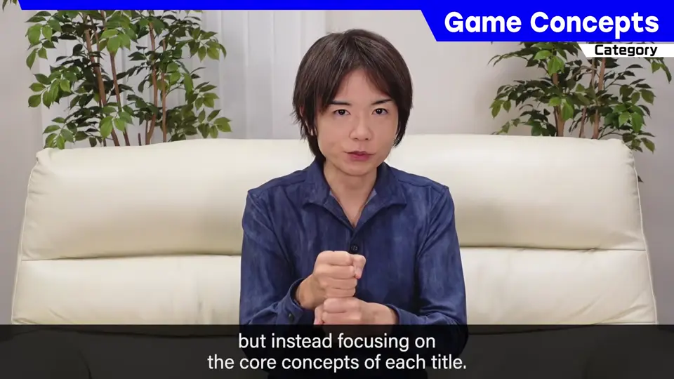
这次是初代《星之卡比》——他第一次当导演的作品。最初的企划书是 19 岁时写的。
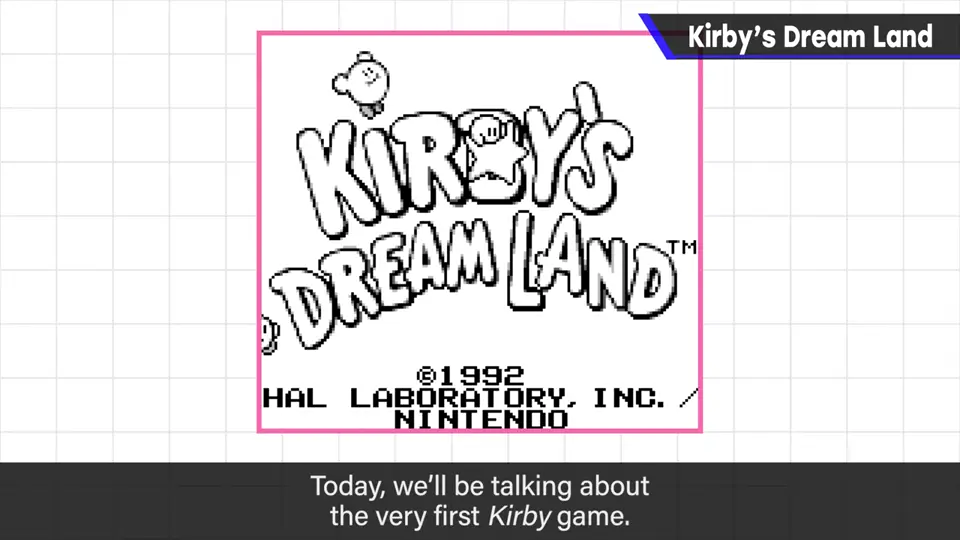
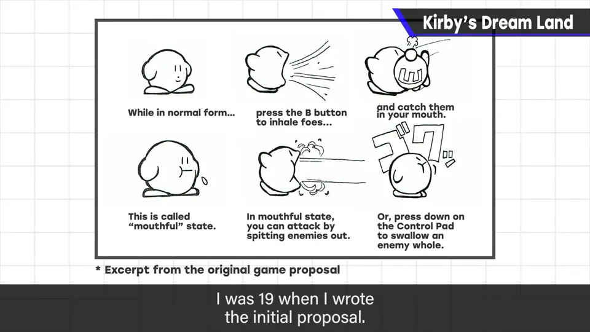
2. 利用敌人的乐趣 0:52
那时并没有清楚地思考风险与回报，但隐约觉得「利用敌人」很有趣。
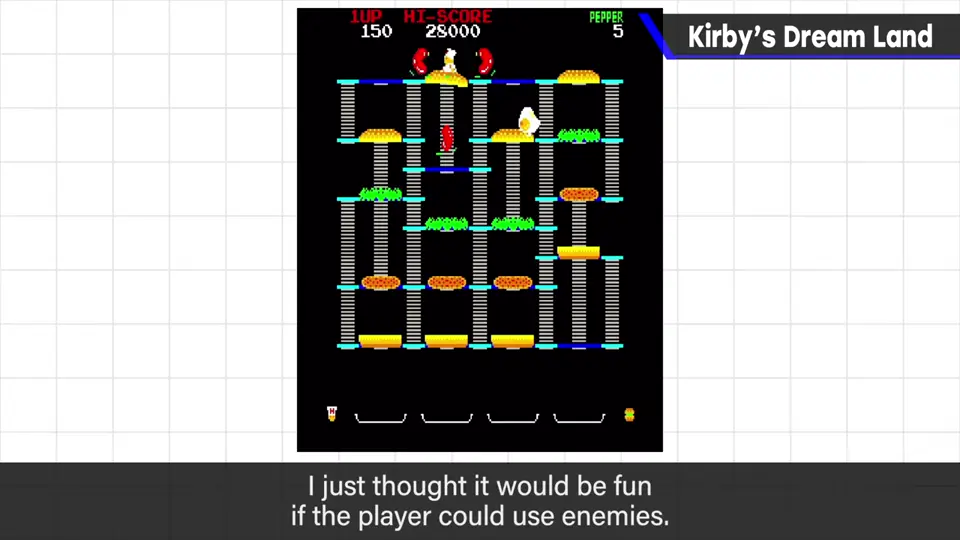
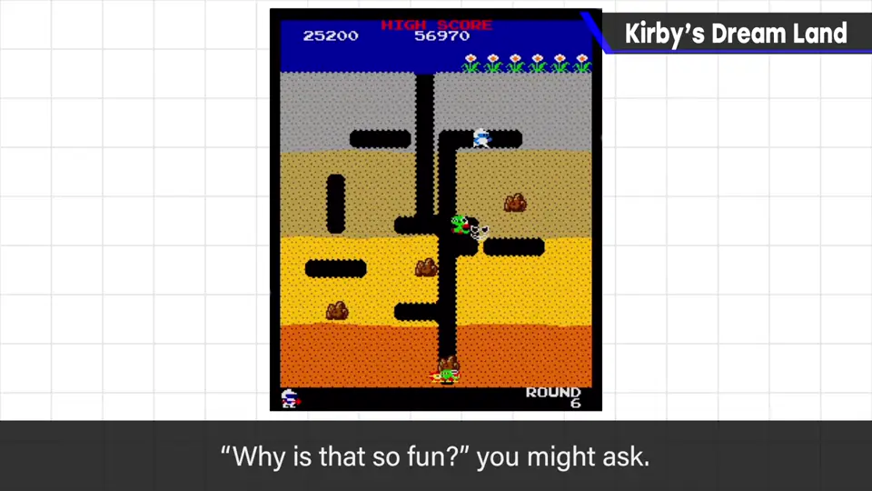
洛克人用打倒的 Boss 的武器，但更接近通关后武器增加，不算「利用眼前的敌人」。
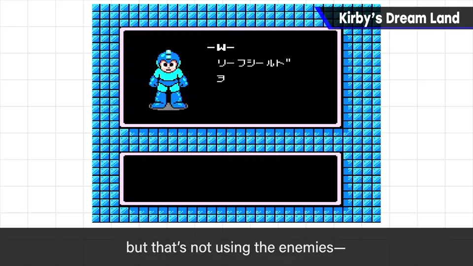
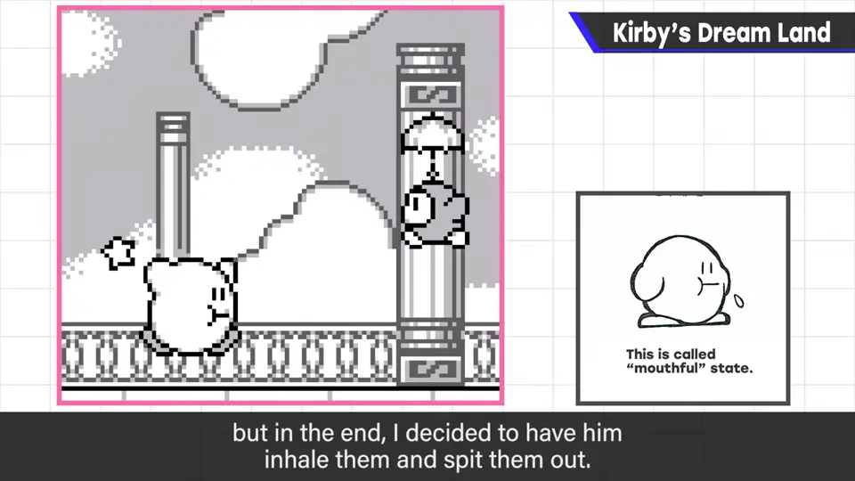
初代卡比想的是：能否用更简单的方法利用眼前的敌人。最初是用舌头缠住，最终做成吸入、吐出。企划阶段耀西还没登场。
3. 为什么能飞 1:56
他认为在体力制游戏中，掉下去就一次失误太重：和碰到敌人相比，掉崖并没有做多坏的事，但很多动作游戏掉崖即死。
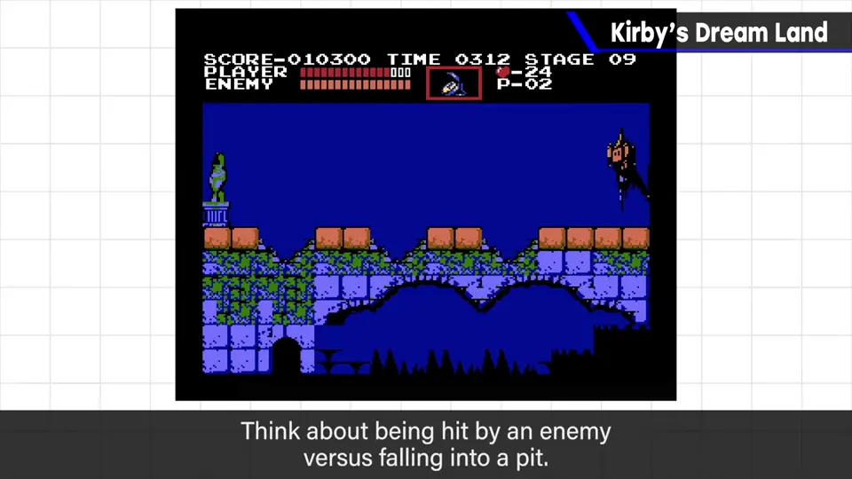
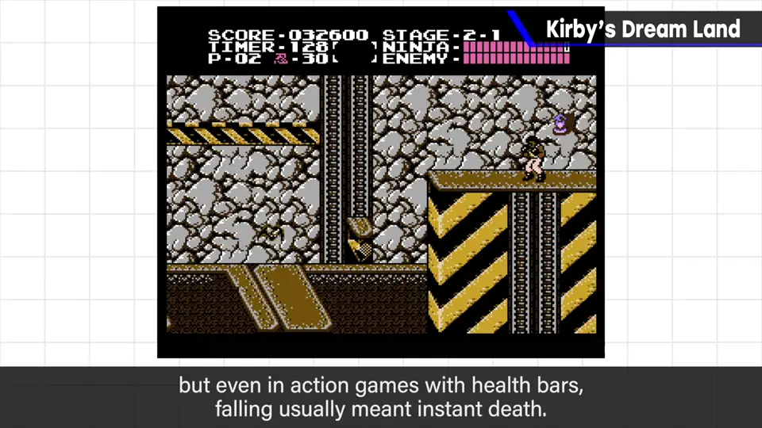
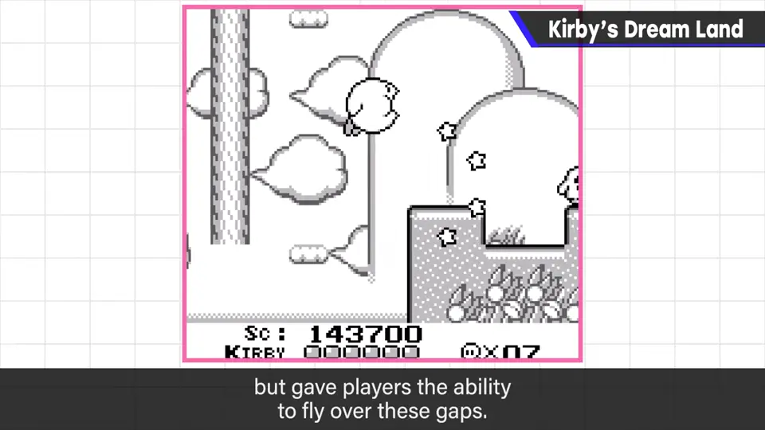
吸入也是朝让游戏更简单、减少风险的方向思考的。
4. 面向初学者 2:43
那游戏会不会不好玩？初代卡比确实做了面向初学者的调整，开发中多次被问「这样好吗？」，他坚持说这样就好。
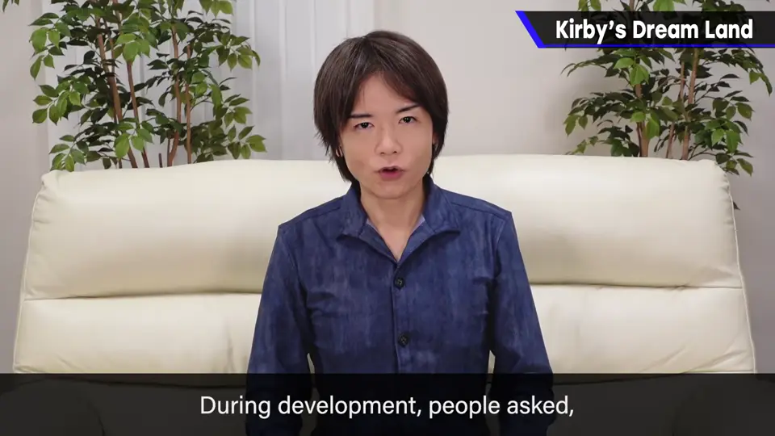
当时是 FC 末期，FC 游戏整体很多非常难。背景之一是不充裕的 ROM 容量：游戏小，不提高难度就会马上通关。
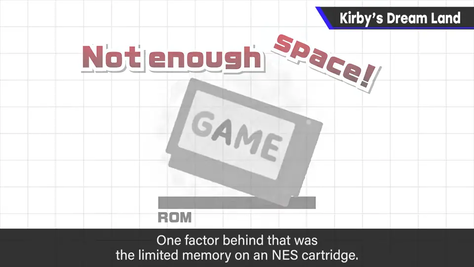
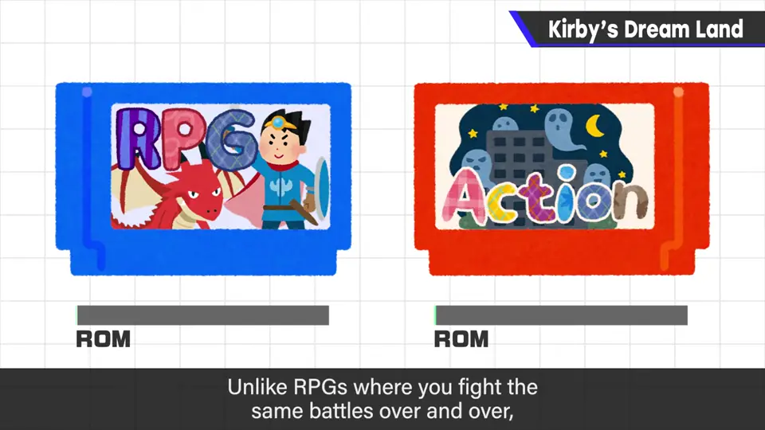
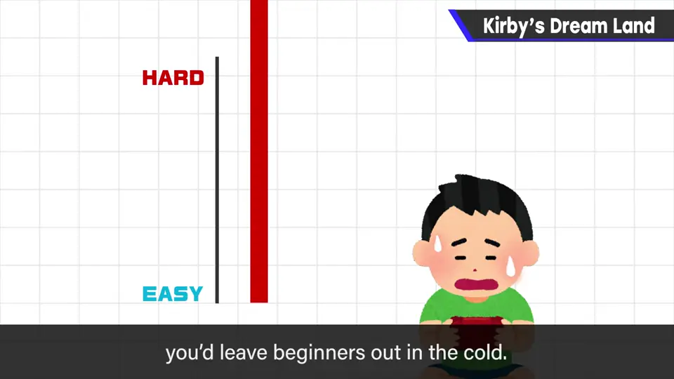
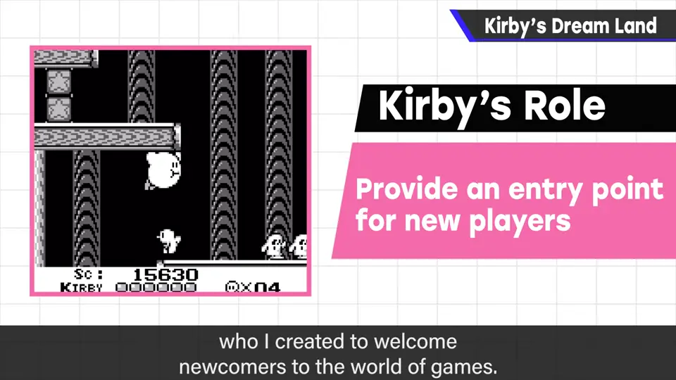
5. 简单也能反复玩 3:57
街机即使通关也不会就此结束，好玩就会反复玩。初代卡比比较简单，但拿到的人应该反复玩了很多次，GB 动作游戏中手感也算很好。
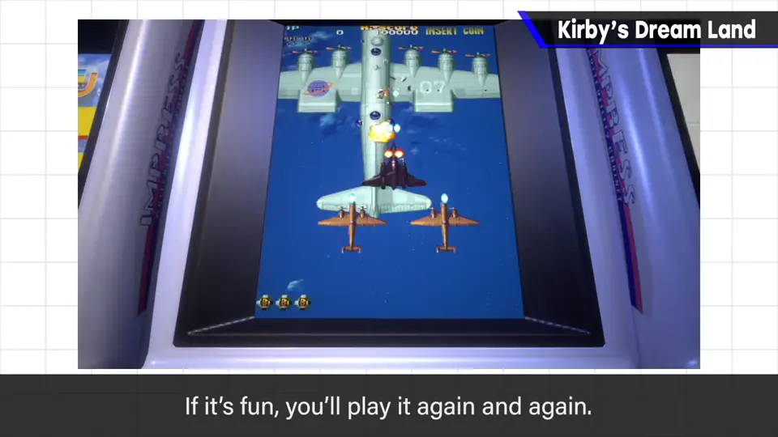
一开始就有声音测试；关卡开始与前奏刚好吻合、通关舞等，当时就看得出对音乐的讲究。
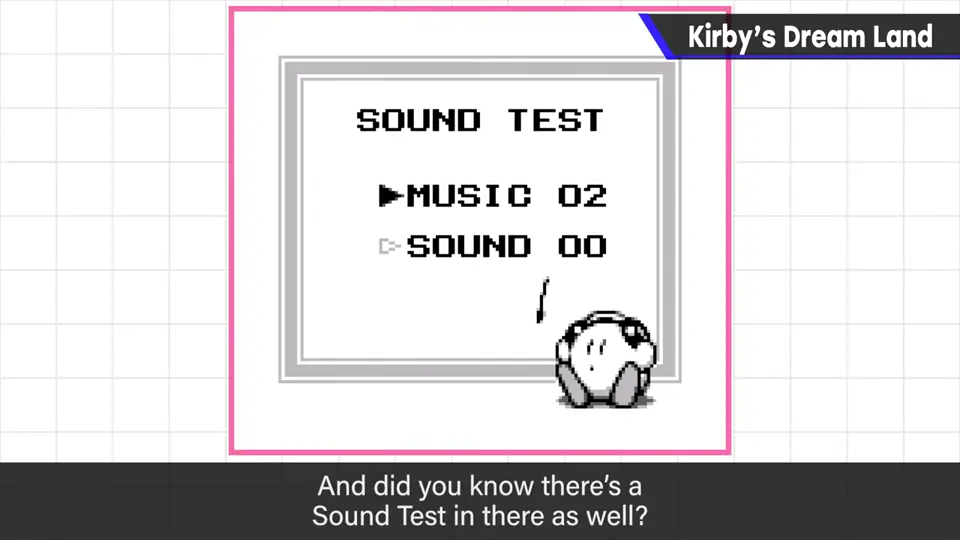
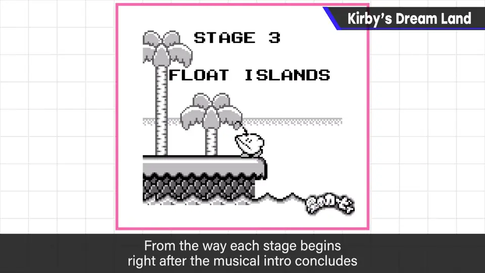
6. 结果 4:44
自测题
1. 卡比的「吸入」源自什么想法？
利用敌人有趣（风险回报一体），想用更简单的方法利用眼前的敌人。 1:45
2. 卡比为什么能飞？
体力制游戏中掉坑即死太重，保留失误但能靠飞行越过。 2:27
3. 樱井为何坚持把初代卡比做成面向初学者？
FC 末期游戏普遍很难，新手进不来；卡比的角色是把初学者带进游戏世界。 3:58